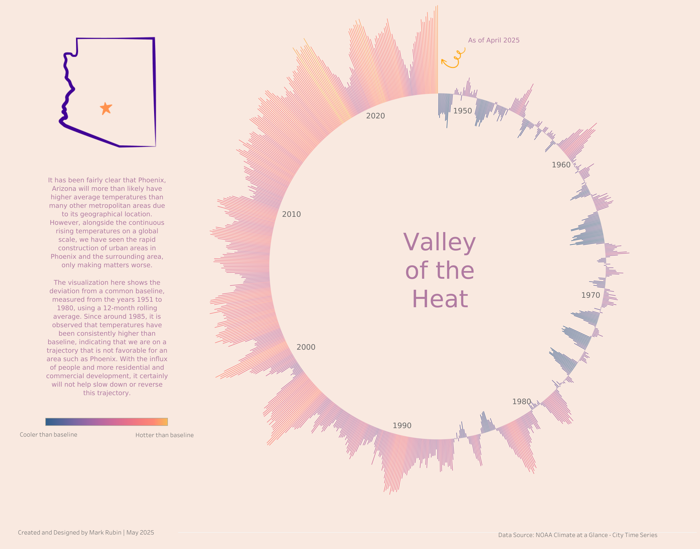

Valley of the Heat
Making 75 years of Phoenix temperature data instantly understandable
View Dashboard →
The Problem
Most people glaze over when they see traditional line graphs and bar charts about climate change. The data is there, but it doesn't connect emotionally or make the story clear.
What I Created
A striking circular visualization that tells Phoenix's warming story at a glance. Each "ray" radiating from the center represents one year from 1950 to 2025. Blue rays show years that were cooler than normal, red rays show hotter years. The pattern is unmistakable — Phoenix has shifted from predominantly cool blues in the 1950s–1980s to nearly all reds from the 1990s onward.
Why It Matters
Phoenix isn't just experiencing normal weather fluctuations. The visualization reveals a clear acceleration: the city has warmed dramatically, especially in recent decades. This affects everything from energy costs and public health to urban planning decisions.
The Impact
By turning 75 years of monthly temperature data into an intuitive visual story, this project makes climate change real and local. It's designed for city officials, journalists, educators, and concerned residents — anyone who needs to understand the trend without wading through spreadsheets.
What Makes It Unique
Instead of intimidating charts, the circular design resembles the sun itself — a visual metaphor that reinforces the message while remaining analytically precise. It proves that data visualization can be both beautiful and scientifically rigorous.
Detailed Project Overview
Create an innovative circular time series visualization to illustrate Phoenix, Arizona's dramatic temperature increase over 70+ years, demonstrating the urban heat island effect and climate change impact.
Analyze NOAA climate data from 1950–2025 to visualize Phoenix's temperature deviation from historical baselines using a unique radial chart design that emphasizes the acceleration of warming trends over time.
Key Visualization Aspects
- Circular Time Series Design: Distinctive radial visualization where each "spoke" represents a year, with length and color indicating temperature deviation from baseline
- Climate Storytelling: Visual metaphors (sun-like design) reinforce the heat theme while maintaining analytical precision
- Temporal Pattern Analysis: Clearly shows the transition from cooler-than-baseline temperatures (1950s–1980s) to consistently hotter conditions (1990s–present)
Value & Impact
Makes complex climate data accessible through intuitive visual design
Evidence for policy decisions regarding development and heat mitigation
Demonstrates real-world climate change impacts at the local level
Challenges & Solutions
Missing Monthly Data Prior to 1949
There were multiple months where data was missing for about half the year prior to 1949. Creating a 12-month rolling average to the present day would create some issues, so the decision was made to use the first year of a complete 12-month record.
The Approach & Process
Temperature Anomaly Analysis Script
Purpose: Processes monthly temperature data to calculate climate anomalies for Phoenix, Arizona using a 1951–1980 baseline period.
Core Functionality
Loads and combines 12 separate monthly CSV files, handles YYYYMM date format, consolidates decades of records
F→C conversion, 12-month rolling averages to smooth seasonal variations in Phoenix
1951–1980 baseline from individual readings, standardized deviation measure over time
Formats dates for viz compatibility, creates analysis-ready CSV for Tableau
Technical Skills Demonstrated
- Multi-file data integration with Pandas
- Time series processing and rolling calculations
- Climate data standardization using statistical baselines
- Advanced Tableau design — complex calculated fields and custom non-standard chart types
- Color theory & psychology — intuitive cool-to-hot encoding reinforcing data meaning
This project showcases advanced Tableau visualization skills, climate data analysis expertise, and the ability to transform complex environmental data into compelling, actionable insights for both technical and general audiences.
Data Sources
NOAA Climate at a Glance
Source: NOAA City Time Series
Coverage: Phoenix, Arizona — monthly temperature records, 1950–2025
Baseline Period: 1951–1980 (30-year climatological reference)